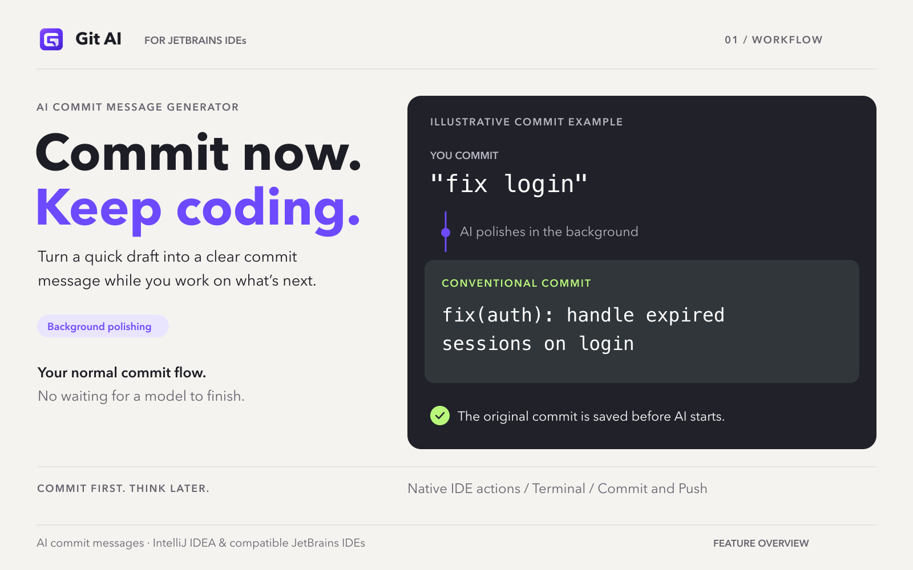
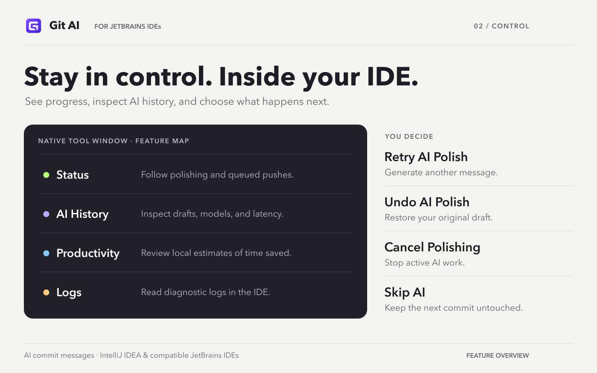
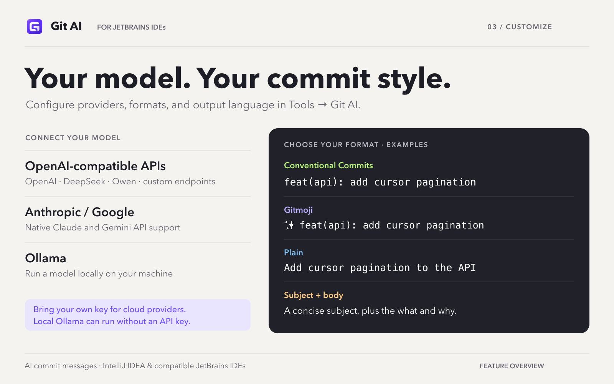
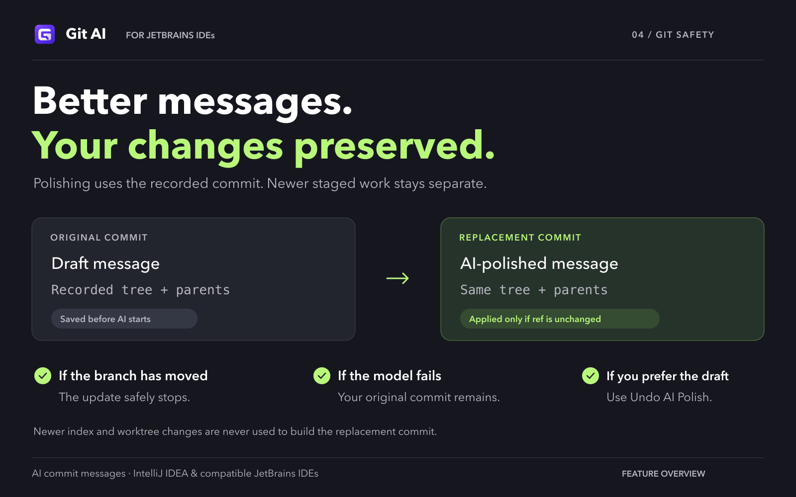

Git AI · Marketplace 展示素材
4 张英文功能介绍图，1600 × 1000 PNG。按以下顺序上传。
这些是功能说明图，不是 IDEA 实拍截图；建议与真实 IDE 截图搭配使用。

01 — Commit now. Keep coding.下载 PNG
02 — Stay in control. Inside your IDE.下载 PNG
03 — Your model. Your commit style.下载 PNG
04 — Better messages. Your changes preserved.下载 PNG